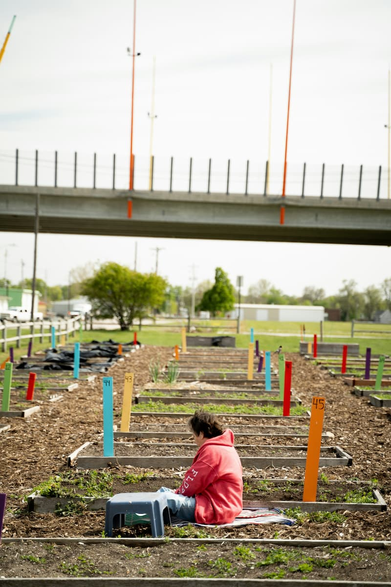

Meio ambiente
Vagas abertas
Horta Comunitária
Transforma terrenos ociosos em hortas que abastecem famílias e ensinam técnicas de cultivo sustentável.
- Meta 2026: 5 hortas ativas
- 120 famílias atendidas